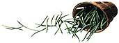
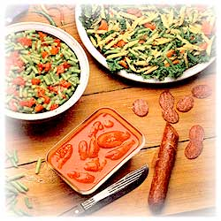
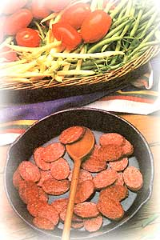
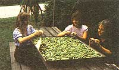

KITCHEN GARDEN
Nutrition in crispy pods.
MANY YOUNG CHILDREN learn to dread the same parental liturgy: "Eat your beans; they're good for you." But that wasn't the case with my two-year-old son. Nothing made him happier than a plastic cup stuffed with whole cooked beans. Clutching the container to his chest, he'd set off on his little adventures, munching bean pods as if they were pretzel sticks.
And I couldn't have been more pleased with his choice of snack, because, even when cooked, both green and yellow (or wax) beans are extremely low in fat and contain wholesome amounts of potassium and vitamins A, B 1 B 2 and C, as well as some phosphorus, calcium and iron. Along with nutrition comes culinary versatility. Snap beans, whose flavor complements that of many other homegrown vegetables, can be transformed into salads, soups, stews and a multitude of side dishes and casseroles.
Beans are, in fact, the third most commonly grown garden vegetable in the United States, outranked only by tomatoes and peppers. And no wonder! They thrive in nearly every section of the country, tolerate soils that range from sandy to clay, and produce an abundant crop in around 50 days. Finally, bean plants-with their butterflylike blossoms in shades of red, pink or white-are downright pretty. When early explorers first returned home with these natives of Central and South America, Europeans used them not as food crops but as ornamentals.
All beans-as well as many other plants, including peas-belong to the Leguminosae family. An important benefit of legumes is nitrogen fixation: Bacteria in the root nodules of most legumes convert nitrogen in the air into a form usable by the plants. If the roots are left in the ground after the tops are removed (or plowed under), the nitrogen also enriches the soil.
Snap beans (Phaseolus vulgaris) are known by various other names: green beans, wax beans, haricots verts and string beans, although the last term is not nearly as accurate as it was prior to the development of a stringless variety in the 1890s. Such beans should be picked while they are still very tender, and their name comes from the sound made by the crisp pods as they are taken from the vine or broken. The young beans require a minimum of cooking and are often served whole.
Snap beans are available either as bush varieties, to be planted in rows or beds, or as pole beans, whose twining vines require support in the form of poles, strings, wires or trellises. Though the bean quality is the same, bush beans make a faster start, grow for a shorter period, and are harvested sooner than poles. However, while the pole beans are slower to mature, they produce a heavy crop in a limited space and also bear, longer, so they are ideal for a small garden. All snap beans are grown as annuals in this country.
Many people use the term runner bean to mean any pole bean, but the runner is a different species, being wider and somewhat "fuzzy," and requiring cooler growing conditions. Runners need to be cooked much longer than young snap beans, and therefore are good for simmering in casseroles.
Snap beans (and runners) are thus grown for their pods. Raised for the actual bean are shell beans-lima, broad (or fava), red kidney, navy, soy and other dried beans-but they deserve an article all their own and will be covered in a future issue.
But even limiting a list to snap beans leaves literally hundreds of varieties to choose from. Medium green Top-crop (49 days) and light green Bountiful (47 days; a good choice for canning) are among the early bush beans. Rich green Blue Lake (56 days), whose six-to seven-inch pods are perfect for canning and freezing, is a longtime favorite. Breeders have used this variety to create a large number of dependable Blue Lake hybrids, and all such Blue Lakes-along with Astro (53 days), Contender (53 days), Tender green (57 days), Tendercrop (53 days; good for cooking whole) and Greencrop (50 days; with six-inch pods popular for French slicing)-are available as bush types that are resistant to bean mosaic virus, a common bean disease.
Disease-resistant pole beans include McCaslan (65 days) and a climbing version of Blue Lake (65 days). Though lacking this protection, other popular pole bean varieties are Kentucky Wonder (65 days), Kentucky Wonder Wax (68 days) and the heavily yielding Romano (66 days), which produces tender, meaty beans until frost. Another bean that's well worth cultivating despite its lack of disease resistance (and its unruly growth habits) is the old-fashioned white half runner so favored by gardeners in the Southeast. It bears a bit later than other beans and isn't the easiest variety to grow, but if a crop is successful, the plants, when picked regularly, produce abundantly for weeks, and the "beany-tasting" pods remain extremely flavorful when canned or frozen. Most half runners require some support, but not as much as regular pole beans. For a more exotic variety, try the yard-long bean, whose rampant vines can produce three-foot-long pods, though they taste best at a tender 12 to 15 inches.
Since beans are self-pollinating, two cultivars can be grown side by side without much danger of cross-pollination. However, if you're a seed saver, you should probably separate different varieties by at least 50 feet, with a barrier crop between.
Two things are essential to produce an optimum crop of snap beans: a sheltered, sunny spot and well-drained soil. If the earth is too soggy or too cold, the bean seeds will rot in the ground. Wait to plant, therefore, until the soil and the air (even the nights) warm up. Prior to that, fork in a medium amount of powdery compost and aged manure, but go easy on any soil amendments that contain a lot of nitrogen, as an excess produces leaves instead of blossoms and beans. A bean patch planted in fertile loam probably won't need additional fertilizer. Ideally, the soil should be just slightly acid, having a pH range of between 6 and 7. Lighten heavy clay by working in peat, coarse sand or extra compost.
Since most bush varieties produce the bulk of their crop over a two-week period, you can insure a continual harvest by staggering plantings at two-week intervals until around 60 days before fall's first killing frost. Roughly speaking, two ounces of seed will grow about 20 to 25 pounds of beans. Ten bushbean plants per person should provide an excess to freeze or can.
Once the soil has warmed up, sow single seeds of bush beans two inches apart in rows two feet apart (three feet if you plan to cultivate with a garden tiller). Drop a few at the end of the row, and transplant the resultant seedlings into spaces where seeds don't germinate. (Some people soak their beans overnight before planting, but this can cause them to crack. And some gardeners dust the seeds with an inoculant powder when planting in a new site, but this isn't absolutely necessary.) Place the seeds approximately one inch deep in heavy soil; one and one-half inches deep in light soil. Increase the depth about one-half inch for summer plantings, but don't plant so deep that the sprouts can't push up through the earth.
It's said that beans thrive when grown near carrots and cauliflower but are stunted by garlic and onions. Potatoes and beans are a classic combination, as each repels the pests that attack the other. Lettuce intercropped with beans helps protect the young plants, but harvest this "nurse" crop as soon as the beans are growing well. You may also have to support tall bush types with brushy twigs if they're exposed to winds.
In colder regions, it might be late May before cold-sensitive pole beans can be planted. Longer growing seasons, however, can often support two crops. To determine whether this is possible in your area, take the number of days to maturity for a particular variety, and count back from the fall frost date, adding a week or so for good measure.
Single rows of pole beans should be spaced three to four feet apart, with double rows spaced 12 inches apart. Sow the seeds two inches deep and 10 inches apart. Or plant them in hills spaced three to five feet apart, sowing the seeds at least 10 inches apart. Don't plant too thickly, since crowded vines are subject to rust disease. Put in supports at the time of planting or as soon as the first two leaves of the seedlings open.
There are several popular methods of supporting pole beans. Complete coverage of these is given in "High-Rise Plantings" on page 84. My favorite method is to lash 10 poles together at the top, fan them out, and stick them firmly in the ground. This bean "tipi" is ideal when space is limited, and it also makes a fine playhouse for children. Half runners are often interplanted with corn, utilizing the stalks for support while replenishing some of the nitrogen that corn takes out of the soil.
It's very important to keep weeds out of the rows and from between the plants, but be careful not to injure the beans' roots when hoeing. Also, pull the soil up toward the rows, not away from them. Once the pods have formed, gently remove any weeds by hand, and never cultivate or harvest beans when the plants are wet from dew or rain, because this can spread diseases.
Keep the soil moist until the beans have germinated (about seven days for bush beans and eight to 14 days for pole beans). Water deeply at least once a week if there's no rain. And while moisture is necessary if the blossoms are to set, keep in mind that a hard hose spray can knock off both blossoms and small pods. Once the soil is warm and well watered, mulch to keep down weeds and conserve moisture.
As you've probably gathered by now, beans are subject to a number of diseases. Many can be avoided by buying disease-free seeds and disease-resistant varieties, by rotating the crop every one to two years and by spacing plants far enough apart to provide good aeration. Should a disease attack, destroy the infected plant immediately, don't touch other plants with unwashed hands or clippers, and don't sow beans in that area of the garden again for at least five years. Here are some common diseases you should watch out for:
Anthracnose , a fungus disease brought on by cool, wet summers, causes black, egg-shaped, sunken cankers on the plants' pods, stems and seeds, and the leaves may show black marks on the veins. Buy resistant varieties, and don't spread the spores by handling the plants when wet.
Bacterial blight is prevalent in warm, humid areas and commonly starts with large brown blotches on the leaves. The foliage may fall off, eventually killing the plant.
Mosaic, usually caused by a virus that lives in the seed, spreads from diseased plants to healthy ones. It first yellows the leaves and eventually will stunt growth. Buy resistant varieties.
Rust, which leads to rust-colored, greatly weakened plants, generally occurs late in the season. Avoid it by spacing the plants to allow for air circulation.
Downy mildew attacks beans grown in foggy areas.
Root rot occurs in soggy soil.
Many types of destructive insects can be repelled by planting savory, nasturtiums and French or African marigolds near the bean patch. Some, such as aphids and spider mites, can be discouraged with garlic or soap sprays, sticky traps, diatomaceous earth and wood ashes. (As mentioned, hard hose sprays, which are an effective deterrent, might knock of blossoms and young pods.) Bean crops in some eastern sections of the country and in the Southwest are plagued by the Mexican bean beetle, which in its adult state is tan with black spots on its wings and resembles the beneficial ladybug. Its one third-inch-long larvae are yellow, spiny-looking but soft-bodied grubs. Check the plants daily for these pests and immediately squash any you find. Also, check under each leaf for little clusters of yellow eggs, and destroy them before they hatch and the hungry larvae go to work. To reduce the bean-beetle problem in your own garden, find out when the heaviest outbreaks are likely to occur, and try to plant at a time that will avoid them. You can also alternate rows of potatoes and bush beans to reduce the beetle populations on both crops. Assassin bugs and the tiny wasp Pediobius foveolatus prey on the bean beetle. As a last resort, use rotenone or pyrethrum for serious infestations.
If green-bean pods are allowed to ripen so that the beans inside are fully formed, the plants stop producing and soon die, so pick the beans when they are young and tender and have a crispy snap. Because beans mature so quickly, check on them almost every day. Harvest bush beans by snapping them off with thumbnail and fingers on the meaty part under the calyx. Scissors can be used on pole beans and bush-type runner beans. In either case, be gentle, because yanking off the pods can uproot the plant. Cut off and discard, too, any overly mature beans you may have overlooked in the dense foliage.
Green beans taste best if served the day they're picked, which is one of the best reasons for putting in a bean patch in the first place. They also retain much of that fresh, homegrown flavor when processed right from the garden into the freezer. The usual method is to blanch the clean, prepared vegetables in boiling water for three minutes, cool them immediately in cold water, drain them, pack them into containers (leaving headroom), and seal and freeze them. However, a friend of ours simply fills her containers with raw beans, covers them with cold water and freezes them immediately. She swears they taste fresh-picked if they're used within three or four months.
To can beans, cover washed, prepared beans with boiling water; boil them from three to five minutes, and pack them loosely in hot jars. Add salt (optional), and cover the beans with boiling cooking liquid, leaving one-half inch of headroom. Adjust the lids, and process the jars at 10 pounds of pressure; 20 minutes for pints and 25 minutes for quarts. Complete the seals if necessary. Generally, it takes about two-thirds to one pound of beans per pint. Or, put another way, one bushel of beans (some 30 pounds) will make 30 to 45 pints.
And to avoid that old complaint of "beans, again?" offer variation by preserving the beans whole, in julienne strips or cut both straight across and on a slant in various lengths. Always remove the stem end from beans, but the blossom end can be left on or not.
If, after canning and freezing, you still have beans left over, you might try making old-fashioned "leather britches." Use a large-eyed needle to string fresh snap beans on white crochet thread. Hang them in full sun for two or three days until they're dry, then remove the thread, and spread the beans in a single layer on cookie sheets. Place them in a warm oven for about five minutes, then store the beans in glass jars. To cook the beans, break them, wash them, and soak them overnight in water. Pour off the soaking water, add more, bring the beans to a boil, and simmer them for several hours until they're tender.
|
 MOTHER employees Joy Layne, Debbie Hudson and Brenda Robinson utilize their lunch hour to dry old-fashioned ""leather britches."" |
 |
 |
|
 |
|
|